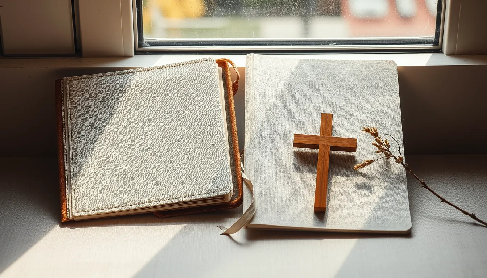
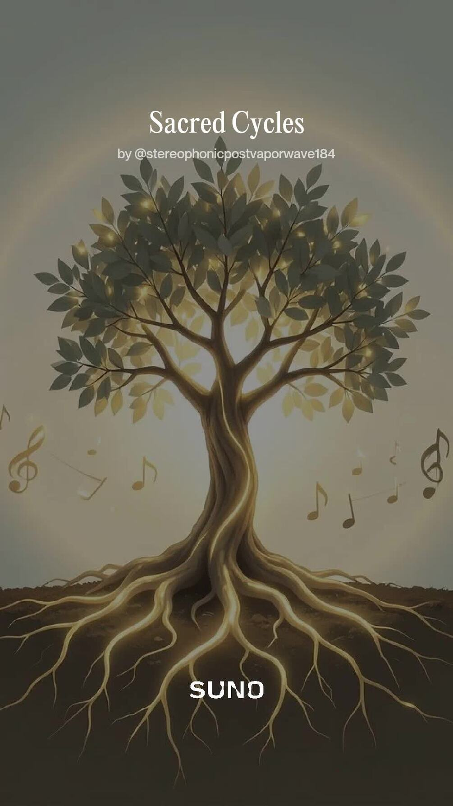

Digital wellness guide
Stress Less
Strategies and guided practices for creating calmer everyday routines.
Created with care by T. Lott
Explore digital wellness guides, stories, audiobooks, music, learning experiences, and practical creator tools—all gathered in one thoughtful shop.
A focused path is easier than a wall of products. Begin with the kind of support, story, or creative resource you want.
Guides and reflective resources for steadier routines.
Stories, audiobooks, and thoughtful reading experiences.
Adaptive learning experiences, family activities, and teacher tools.

Faith-centered reflection and uplifting listening.
Practical workspaces for publishing, design, and discovery.
A smaller, clearly described selection gives visitors an easier first decision. Prices and formats are shown before they leave ARTISY.
Strategies and guided practices for creating calmer everyday routines.
Story-led reflections and practical ideas for gentler moments.
A listening experience centered on daily wisdom and reflection.

A structured mind-body reflection journey delivered digitally.
Behind ARTISY
ARTISY is created by Ting Lott, a registered nurse and educator. The store brings wellness, storytelling, family learning, music, and creator resources into one practical collection.
This faceless brand uses real product previews and carefully chosen editorial imagery while keeping the creator’s privacy intact.
No mystery buttons or complicated memberships. Each listing should explain the format, contents, price, and delivery before purchase.
Browse by need or begin with a featured product.
Confirm the format, contents, price, and intended audience.
Purchase and digital delivery take place through Gumroad.